| Inicio/ |
Plantas |
PLANTAS |
| . Árboles Arbustos Suculentas Plantas acuáticas Plantas terrestres Plantas trepadoras Plantas con flores Plantas sin flores Hierbas . |
A continuación se mostrarán los tipos de plantas que existen:
1. Árboles |
| Un árbol es una planta de tallo leñoso que se ramifica, puede ser perenne o caduco. El tallo principal se denomina tronco. Los árboles son uno de los principales componentes del paisaje, evitando la erosión del terreno, también son importantes en la agricultura (los frutales), y una fuente importante en la construcción de muebles. |
| Vista |
Tipo |
Definición |
Ejemplos |
| 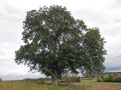 nogal
|
Hoja caduca |
Son árboles que pierden sus hojas durante una parte del año, generalmente en otoño e invierno,
como parte de un ciclo estacional. Estos árboles pueden variar en
tamaño, forma y tipo de hojas, y suelen estar adaptados a climas
templados. |
Roble, arce, tilo, álamo... |
| 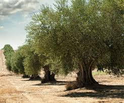 olivo
|
Hoja perenne |
Son árboles que mantienen sus hojas verdes durante todo el año, sin importar la estación. Estos
árboles suelen ser más comunes en climas tropicales o templados
cálidos, donde las temperaturas no descienden lo suficiente como para
causar la pérdida de follaje. |
Pino, ciprés, olivo, laurel... |
| 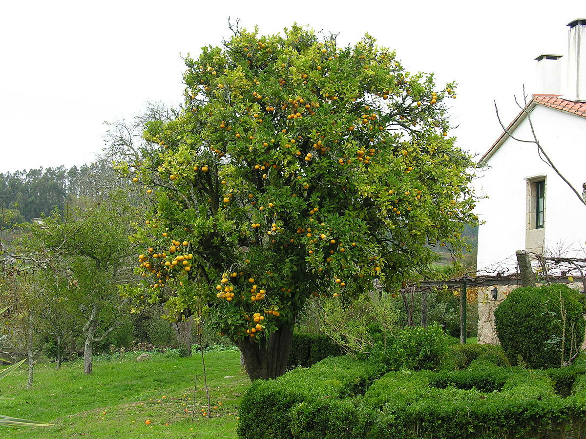 naranjo
|
Frutales |
Son árboles que producen frutas comestibles. Estas frutas pueden ser consumidas frescas,
procesadas en productos como jugos o conservas, o utilizadas como
ingredientes en la cocina. Los árboles frutales son populares tanto en
huertos comerciales como en jardines domésticos. |
Manzano, naranjo, limonero, crezo, duraznero... |
| 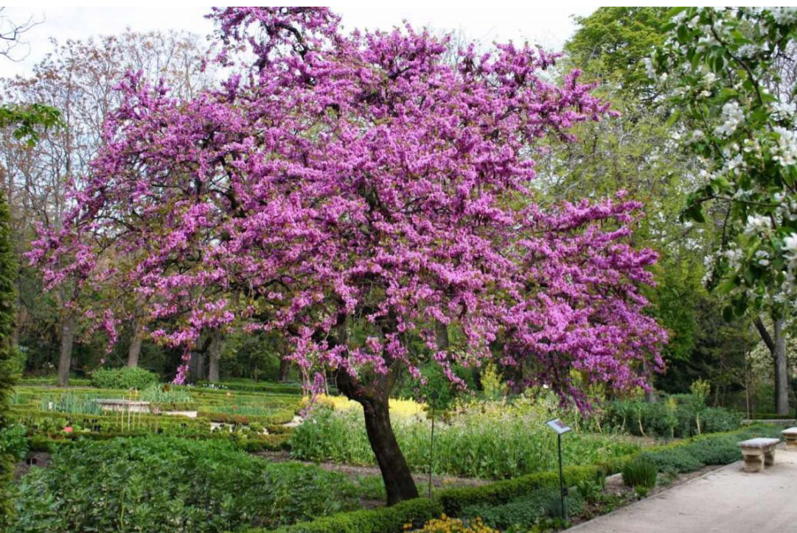 arbol del amor
|
Ornamentales |
Son árboles plantados
principalmente por su valor estético y decorativo en jardines, parques
y paisajes urbanos. Estos árboles pueden tener flores vistosas, follaje
colorido, formas interesantes o corteza llamativa. A menudo, se
seleccionan por su capacidad para embellecer un espacio o crear un punto focal visual. |
cerezo en flor, árbol de jarandá, magnolio, mimosa, árbol tulipán... |
2. Arbustos |
| Los arbutos son una
especia vegetal de tipo leñoso, es decir, que tiene sus tallos y sus
tamas duras y rígidas, lignificadas, que alza su estructura no sobre un
único tronco, como los árboles, sino con ramificaciones que se dividen
ya desde su base a ras de suelo o incluso por debajo.Tienen una gran cantidad de raíces que desarrollan y pueden llegar a alcanza alturas de hasta 6 metros, y más aún en algunas ocasiones. |
| Vista |
Tipo |
Definición |
Ejemplos |
| 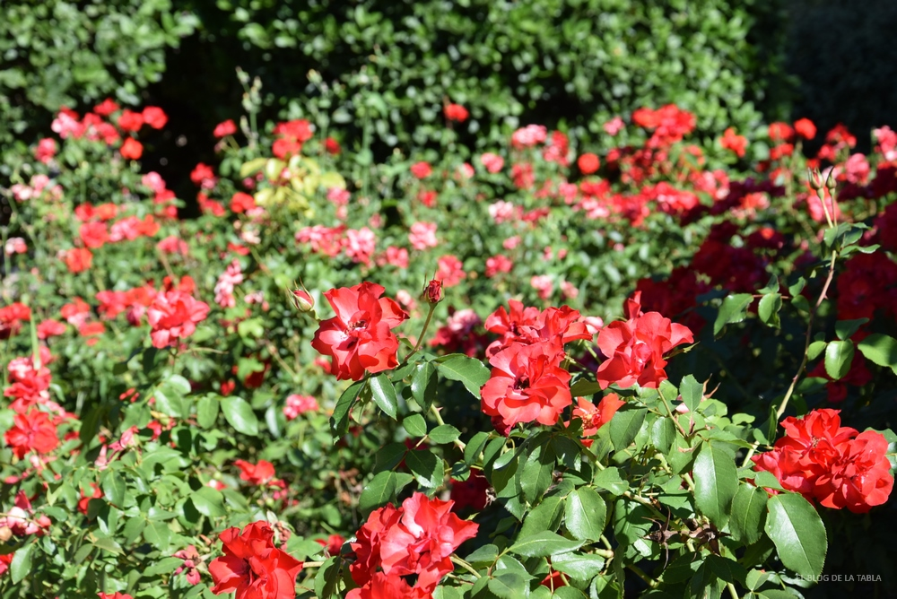
rosal
|
Hoja caduca |
Son
aquellos arbustos que pierden sus hojas en ciertas épocas del año,
generalmente durante el otoño y el invierno. Estos arbustos pasan por
un ciclo de renovación de follaje, perdiendo las hojas viejas y
desarrollando nuevas en primavera. |
Rosal, espino albar, saúco... |
| 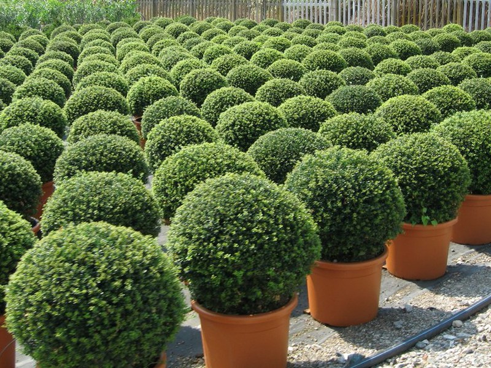
boj
|
Hoja perenne |
Son
arbustos que mantienen sus hojas verdes durante todo el año, sin
importar la estación. Estos arbustos no pasan por un ciclo de pérdida
de follaje estacional. |
Laurel, boj, arrayán... |
| 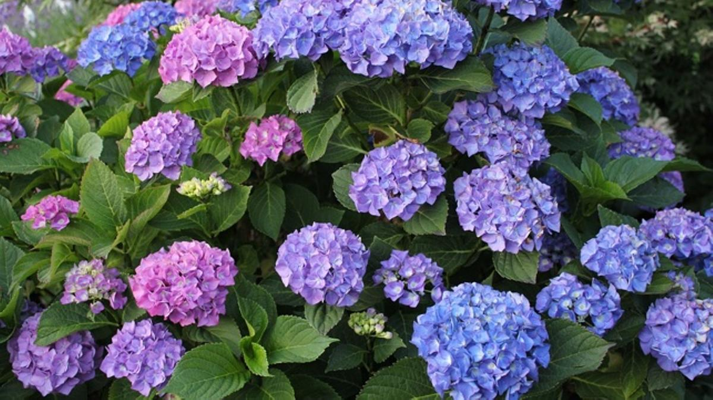
hortensia
|
Con flores |
Son
arbustos que producen flores durante ciertas épocas del año. Estas
flores pueden ser de diversos colores, formas y tamaños, y suelen ser
una característica ornamental importante de la planta. |
Rosa, jazmín, hortensia... |

laurel se hoja oscura
|
Sin flores |
Son
arbustos que no producen flores o cuyas flores son muy poco vistosas. A
menudo, estos arbustos son apreciados por su follaje decorativo o por
otras características, como la textura de la corteza o la forma de
crecimiento. |
Boj, laurel de hoja oscura, ciprés... |
3. Suculentas |
| Las plantas suculentas o
crasas son aquelllas en las que algún órgano está especializado en el almacenamiento de agua en cantidades mayores que las plantas sin esta
adaptación. Estos órganos de reserva tienen una alta proporción de
tejido parenquimático. El almacenamiento del agua en los órganos de
algunas suculentas es de 90-95%. Su adaptación les permite mantener
reservas de agua durante períodos prolongados, y sobreviven a los
largos períodos de sequía en climas áridos. |
| Vista |
Tipo |
Definición |
 |
Aloe vera |
Es una especie procedente
del Noroeste de África, de hecho es habitual verlos en las Islas
Canarias. Sus hojas son carnosas y alargadas, de color verde y
densamente afrupadas. Hay varios tipos de aloe vera, pero todos tienen
sus márgenes dentados. El aloe vera necesita mucha luz y no soporta el
exceso de humedad, por lo que sus riegos deben ser moderados. Pueden
florecer en primavera y presentan un pedicelo, coronado por unas
florecillas de color anaranjado, rojizo o amarillo. Algunas especies pueden llegar a alcanzar los 4 o 5 metros, aunque su ritmo de
crecimiento es lento. |
| 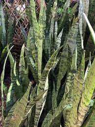 | Sansevieria |
La más conocida es la Sanseciera Trifasciata, de la familia de las Liliáceas, y es
característica por sus hojas planas y acolchadas en forma de lengua. De
ahí su nombre, ya que se la conoce también como lengua de suegra,
espada de San Jorge o lengua de tigre, esta planta de interior requiere
unos cuidados muy sencillos y, además, es muy agradecida, fuerte y
resistente. Aunque puede vivir en las peores condiciones de
iluminación, cuanto más la dé el sol, más verdes serán sus hojas y más
crecerá. Su temperatura ideal es entre 16 y 21 ºC. |
| 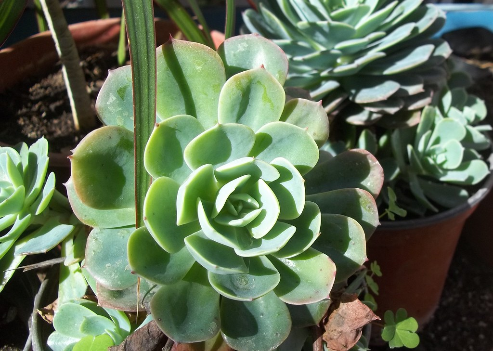 |
Echeveria |
Esta crasa es de la
familia de las crasuláceas. Es originaria de zonas templadas deEstados Unidos y México. Sus hojas son planas y muy carnosas y se disponen en
forma de roseta. Una de sus particularidades es que crecen directamente
del suelo. Hay hasta 400 especies distintas de Echeveria, como la
Elegans, característica por sus hojas azuladas. Necesitan varias horas
de luz directa al día. Pueden ubicarse en el interior y en el exterior,
aunque en este caso deberás protegerla del viento y la lluvia. |
 |
Árbol de Jade |
La Crassula ovata o árbol
de Jade es una de las crasas más preciadas por su belleza. Se
caracteriza por su forma de árbol, con trondo marrón y hojas ovaladas y
carnosas de color verde brillante. Su floración se produce entre
primavera y verano, con flores de color blanco o rosa y en forma de
estrella. Colócala en un espacio luminoso y soleado, aunque es capaz de
aguantar temperaturas de hasta -7 ºC. |
4. Plantas acuáticas |
| Son plantas adaptadas a los medios muy húmedos o acuáticos tales como lagos, estanques. charcos, estuarios, pantanos o acuáticos tales como lagos, estanques o charcos. Su adaptación al medio acuáticco es variable. Se pueden encontrar diferentes grupos de plantas: unas totalmente sumergidas, otras, las más numerosas, parcialmente sumergidas con hojas flotantes. |
| Vista |
Tipo |
Definición |
Ejemplos |
| 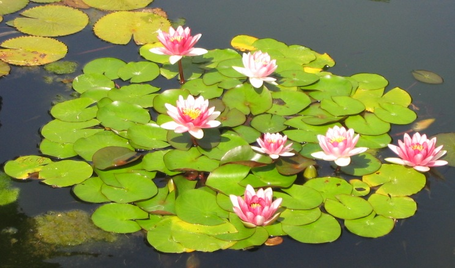 nenufar
|
Flotantes |
Son
plantas que tienen la capacidad de crecer flotando libremente en el
agua sin necesidad de arraigar en una maceta o en el fondo de un
estanque. |
Nenúfar, azolla, pistia stratiotes, nymphaea alba y lotus... |
|
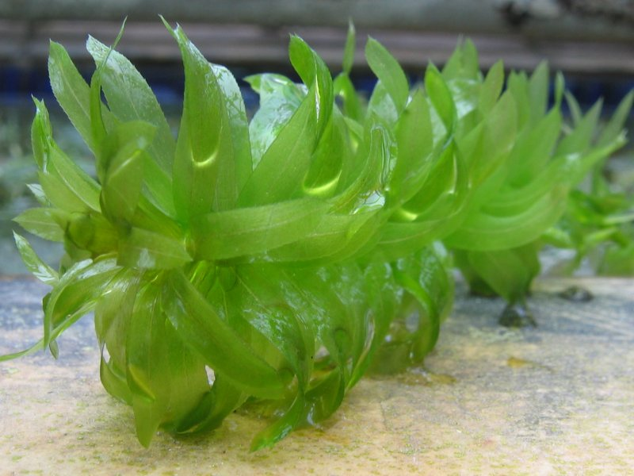
elodea
|
sumergidas |
Todas
las plantas sumergidas ofrecen una excelente protección para los peces
que habitan aguas medias y profundas del estanque de jardín. Sin
embargo, están sometidas a un ciclo anual, en otoño reducen la mayor
parte de su estado para volver a brotar en la primavera. Todas las
plantas acuáticas son ávidas de la luz por lo que se orientan hacia la
capa superior del agua. |
Cabomba australis y carolianiana, cola de zorro, espada amazónica, elodea... |
| 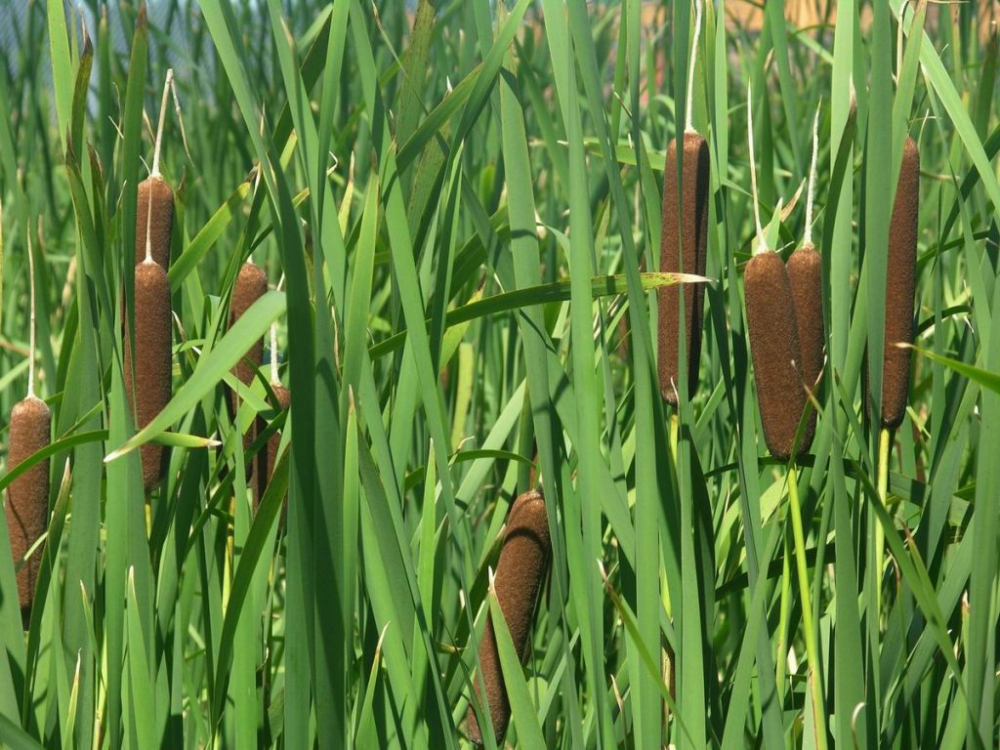 juncos
|
Emergentes |
Son
plantas anfibias que viven en aguas poco profundas, arraigadas en el
suelo, y cuyos tallos y hojas emergen fuera del agua, pudiendo Ilegar
hasta alturas de dos y tres metros. |
Carrizos, juncos, eneas... |
5. Plantas terrestres |
| Constituyen la flora de la tierra (Embryophyta) y se diferencian de las algas porque sus hábitats no son principalmente acuáticos y están adaptadas para sobrevivir sobre suelo fime. No obstante, algunas pueden ser semiacuáticas o toleran bastante bien la vida cerca o sobre un cuerpo de agua. |
| Vista |
Tipo |
Definición |
Ejemplos |
| 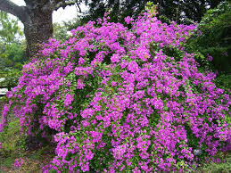
bugambilla
|
vasculares |
Las
plantas vasculares, también conocidas como traqueofitas o cormofitas,
pertenecen al grupo Tracheophyta. Estas plantas tienen como principal
característica que cuentan con tejidos que conducen los fluidos a
través de la planta y otros que otorgan un soporte para permitir que
estas consigan un gran desarrollo de forma individual. A las plantas
vasculares también se las nombra, de manera general, como plantas superiores. |
Pteridófitas, angiospermas, gimnospermas |
| 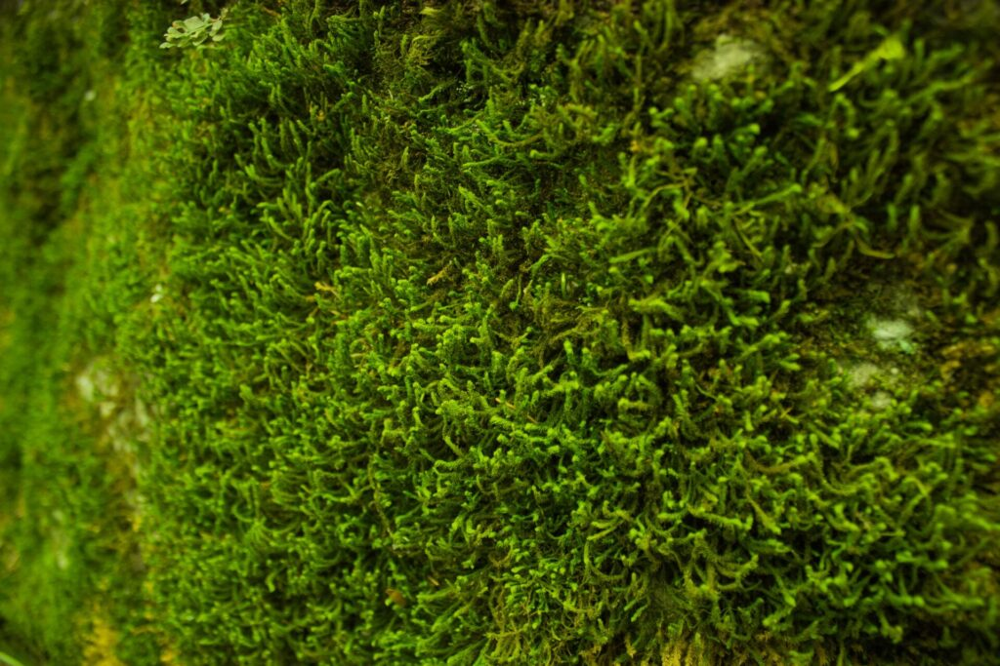
musgo
|
No vasculares |
Se
conoce como briófitas o plantas no vasculares, de forma general, a
aquellas que carecen de raíces, tallos y hojas. A esto se suma que
tampoco cuentan con vasos tubulares ni conductivos. Por ello, al no
contar con un sistema vascular, xilema y floema. |
Musgos, antocerontes y hepáticas |
6. Plantas trepadoras |
| Son
el resultado de adaptaciones producidad a lo largo de muchos años. de
esta manera, consiguen dejar el suelo y elevarse en direción a la luz
solor para conseguir una fotosíntesis más eficiente. |
| Vista |
Tipo |
Definición |
Ejemplos |
| 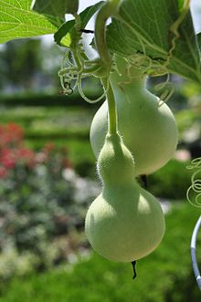
calabaza
|
De guía o guiadoras |
Estas plantas tienen estructuras especiales,
como zarcillos, que les permiten sujetarse a superficies verticales,
como paredes o cercas. Utilizan estas estructuras para trepar y crecer
verticalmente en busca de luz solar. Es la especie cuyos tallos elongados y delgados no se sostienen por sí mismos. |
De fruto comestible (calabaza), de pared (hedera), de alambrado, de gorieta, de interior y de exterior |
| 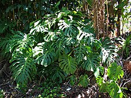
monstera
|
Semitre- padoras o apoyadoras |
A diferencia de las plantas de guía, estas plantas no pueden trepar por sí mismas, pero tienen la capacidad de adherirse o enrollarse alrededor de estructuras
cercanas para sostenerse y crecer verticalmente. Algunas plantas
apoyadoras pueden desarrollar raíces aéreas que se adhieren a las
superficies, mientras que otras tienen tallos flexibles que pueden
enroscarse alrededor de un soporte. Son aquellas cuyo órgano de
fijación son sus ramas largas y leñosas armadas de aguijones. |
Rosa, monstera, palmera trepadora, bamboos... |
7. Plantas con flores |
| Las
plantas con flores son angiospermas que producen semillas encerradas en
frutos. Sus flores contienen órganos sexuales y se encuentran en
diversos hábitats. Son clave en los ecosistemas como polinizadores y productores de alimentos. Su diversidad las hace destacar en jardinería
y paisajismo. Con alrededor de 300,000 especies, son el grupo dominante
de plantas en la Tierra. |
| Vista |
Tipo |
Definición |
Ejemplos |
| 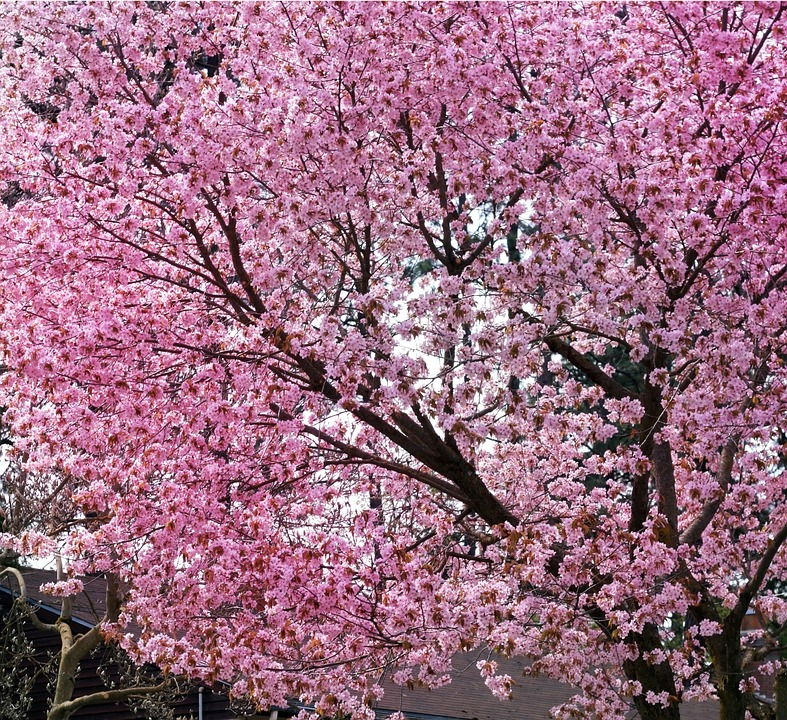
cerezo
|
Rosáceas |
Las rosáceas son una
familia de plantas que incluye árboles, arbustos y hierbas,
caracterizadas por sus flores generalmente vistosas y su fruto en forma
de drupa o pomo. |
Rosas, manzanos, perales y cerezos |
| 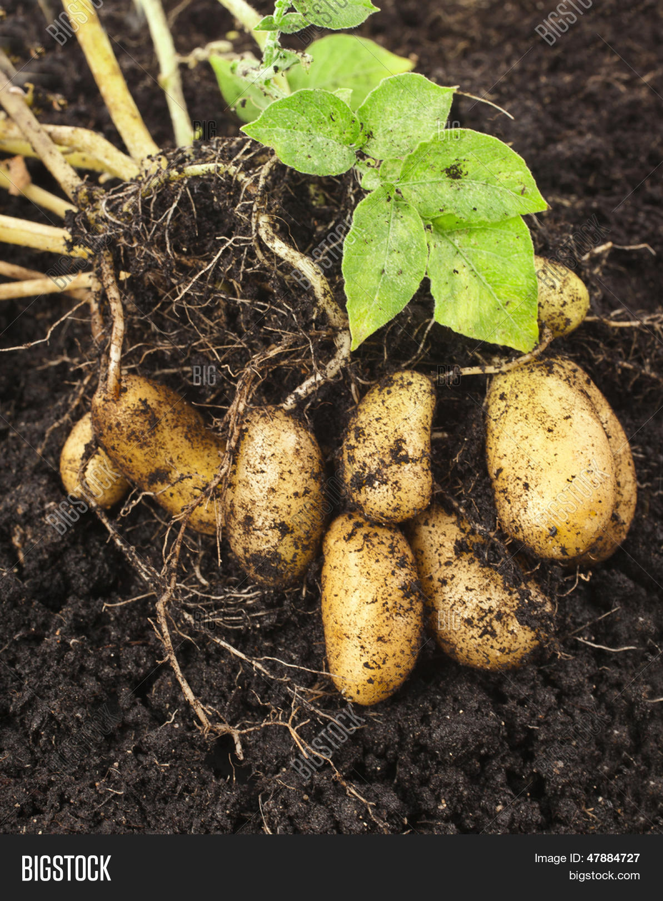
patata
|
Solanáceas |
Las solanáceas son una
familia de plantas que incluye numerosas especies de hierbas, arbustos
y árboles, conocidas por sus flores generalmente en forma de campana y
sus frutos, como tomates, pimientos, berenjenas y patatas. Muchas
especies de esta familia contienen alcaloides, algunos de los cuales
tienen propiedades medicinales o son venenosos. |
Tomates, pimientos, berenjenas y patatas |
| 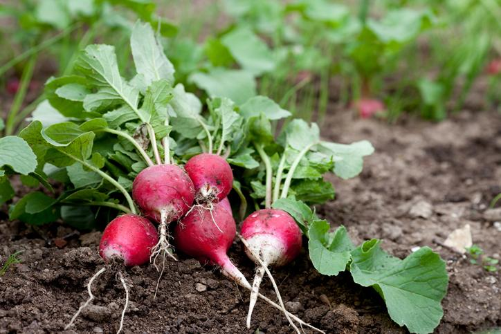
rábano
|
Crucíferas |
Las crucíferas son una familia de plantas que se caracterizan por tener flores con cuatro pétalos dispuestos en forma de cruz. |
Coles, coliflores, rábanos y mostazas |

cactus oreja de Mickey
|
Cactáceas |
Las cactáceas son plantas
suculentas adaptadas a ambientes áridos, conocidas por sus tallos
carnosos y espinosos. Son capaces de almacenar agua en sus tejidos y
tienen flores llamativas. |
Cactus de San Pedro, cactus saguaro, cactus oreja de Mickey... |
| 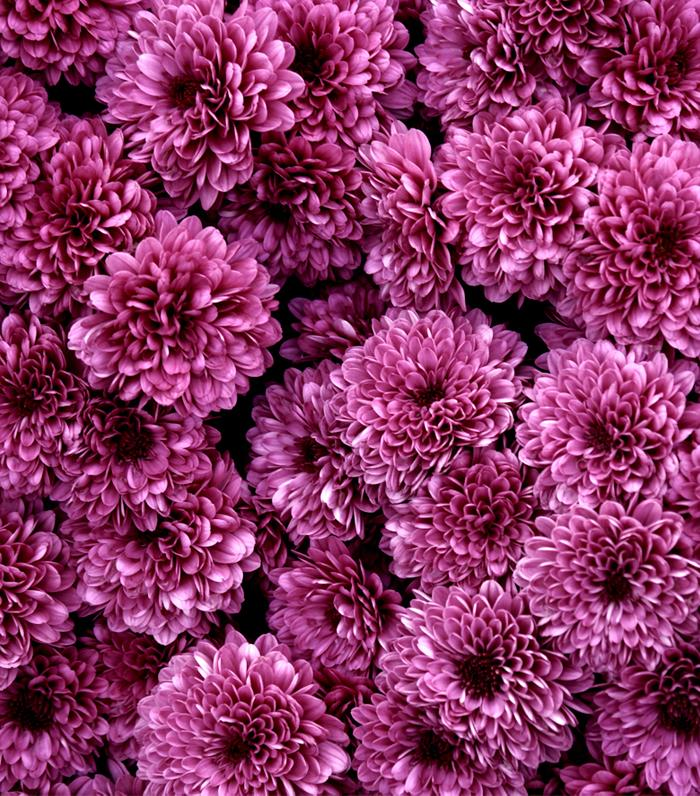
crisantemo
|
Asteráceas |
Las asteráceas son una
familia de plantas que se caracterizan por tener flores compuestas,
formadas por numerosas florecillas pequeñas agrupadas en un receptáculo
común y rodeadas por brácteas. |
Girasoles, margaritas, crisantemos y dalias |
8. Plantas sin flores |
| Las
plantas sin flores, llamadas gimnospermas, son un grupo de plantas
vasculares que producen semillas expuestas, no encerradas en frutos.
Sus óvulos se desarrollan en conos o estructuras similares. |
| Vista |
Tipo |
Definición |
Ejemplos |
| 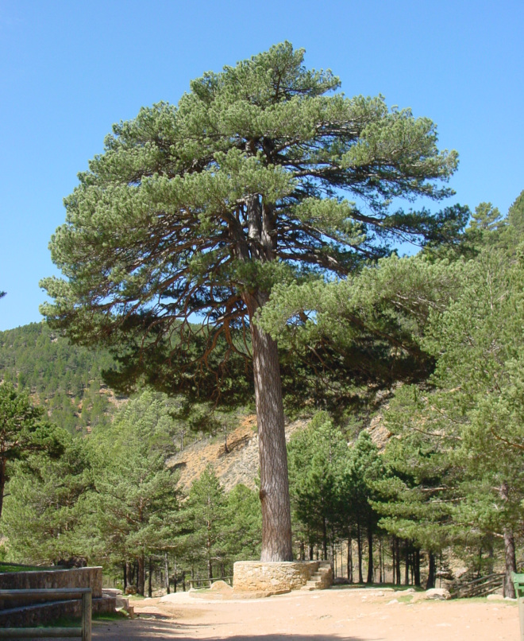
pino
|
Gimnos- permas |
Son plantas vasculares que
producen semillas expuestas, no encerradas en frutos. Sus óvulos se
desarrollan en conos o estructuras similares. |
Pinos, abetos, cedros y cicadas |
| 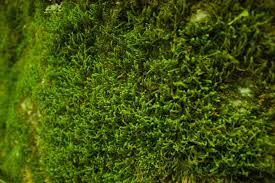
musgo
|
Helechos y plantas afines |
Incluyen una amplia variedad de plantas vasculares que se reproducen por esporas en lugar de semillas. |
Helechos, musgos y otras plantas no relacionadas con las angiospermas |
9. Hierbas |
| Las
hierbas son plantas de tallo suave y flexible, generalmente no leñosas,
que se caracterizan por su ciclo de vida anual, bienal o perenne. Se
utilizan en la cocina, la medicina tradicional y la jardinería
ornamental. Su tamaño puede variar desde pequeñas plantas rastreras
hasta herbáceas de gran tamaño. |
| Vista |
Tipo |
Definición |
Ejemplos |
| 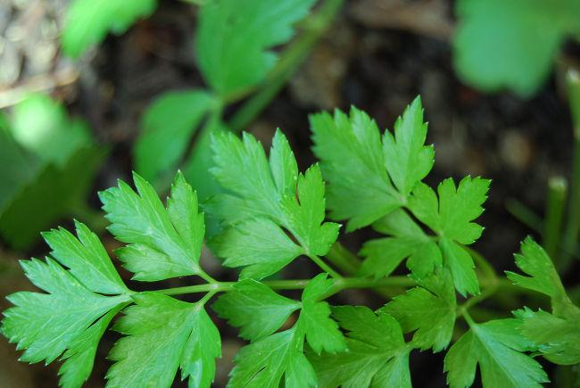
perejil
|
Culinarias medicinales |
Son plantas utilizadas
principalmente para agregar sabor, aroma y color a los alimentos.
Además de su uso en la cocina, muchas hierbas culinarias también tienen propiedades medicinales. |
albahaca, romero, perejil, romillo... |
 hierba de limón
|
Aromáticas |
Son plantas valoradas por su aroma agradable y se utilizan principalmente con fines ornamentales y para aromatizar el ambiente. |
Menta, lavanda, salbia, hierba de limón... |
| 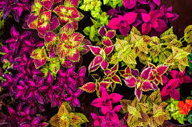 coleo
|
Ornamentales |
Son plantas cultivadas
principalmente por su atractivo aspecto visual, que puede incluir
follaje colorido, flores llamativas o formas interesantes. |
heuchera, helecho de Boston, hosta, coleo... |
| 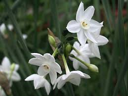
narciso
|
Bulbosas |
Son plantas que crecen a
partir de bulbos subterráneos y que pueden tener usos culinarios,
medicinales, ornamentales o una combinación de estos. |
ajo, tulipanes, narcisos, cebolla... |